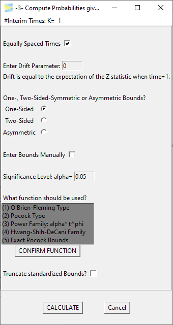
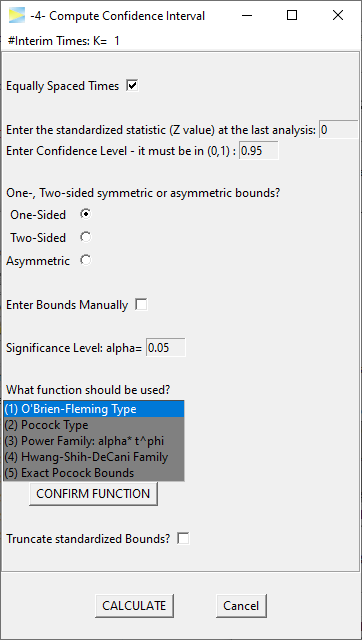

Group sequential designs in essence allow to lower the sample size of clinical or other studies. To be clear - if a group sequentially designed study is conducted until the final analysis, that is, without aborting at one of the interim looks, the required sample will be larger compared to a simple single stage study, because you have to “pay” for the added interim analyses to prevent alpha inflation.
But, from time to time, especially if the underlying effect is strong (e.g. you have a very potent medicine), you will abort the study early and this on average leads to lower sample sizes, or in other words, the expected sample size of group sequential designs is lower than the sample size of comparable studies with just one final analysis.
If you want to get an intuitive understanding on how probabilities of group sequential designs are calculated, please see the vignette Understanding group sequential designs.
The GroupSeq package can be used to perform basic calculations related to group sequential designs. At this point, the functionality is mainly provided via a graphical user interface. The interface was designed such that each calculation can be opened in separate windows allowing to compute and compare arbitrary many designs in parallel.
The following section gives a brief overview of all the available options with links to further details.
GroupSeq menu
Loading the library opens the main GroupSeq window.

The menu lists four possible tasks. To select a task, you have to select a row and hit the Perform Selected Task button. Each task opens in a new window and it’s also possible to open multiple windows of the same task in parallel. For a detailed description of the respective task follow one of the links below:
-1- Compute Bounds
Use this to compute the boundaries of group sequential designs under the null hypothesis (H0), that is, under a given significance level alpha (usually 5%).

|
|
-2- Compute Drift given Power and Bounds
Use this to compute the target effect size of a group sequential design, which maintains a certain power (e.g. power = 80%).

|
|
-3- Compute Probabilities given Bounds and Drift
Use this to compute the power of a group sequential design.
|  |
|
-4- Compute Confidence Interval
Use this to compute the confidence intervals for the target outcome at the final analysis, which can be the last stage as planned or at an earlier stage exceeding the critical bounds and therefore stopping early.
|  |
|
To close the application and, with it, all open windows, just close the main window or hit the QUIT GroupSeq button.